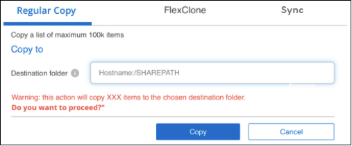
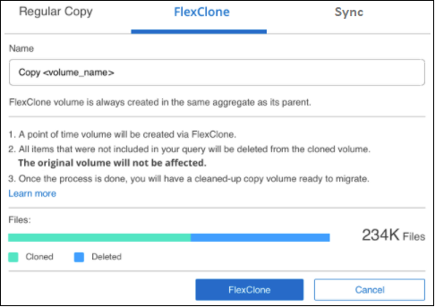
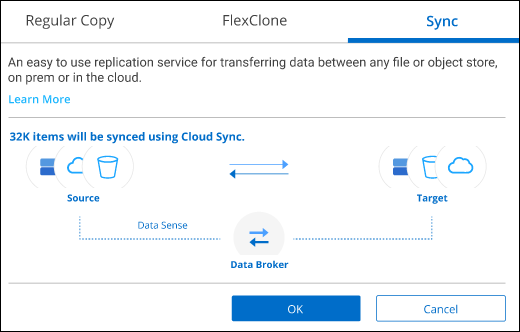
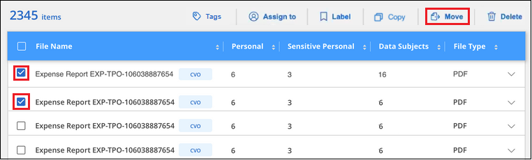

Dokumentationsänderungen beantragen
Dokumentationsänderungen beantragen In GitHub bearbeiten
In GitHub bearbeiten Leitfaden für Beitragende
Leitfaden für BeitragendeManagement privater Daten
Beitragende
Cloud Data Sense bietet viele Möglichkeiten für das Management von privaten Daten. Einige Funktionen erleichtern die Vorbereitung auf die Migration Ihrer Daten, während andere Funktionen können Sie Änderungen an den Daten.
-
Sie können Dateien in eine Ziel-NFS-Freigabe kopieren, wenn Sie eine Kopie bestimmter Daten erstellen und sie an einen anderen NFS-Speicherort verschieben möchten.
-
Sie können ein ONTAP Volume auf einem neuen Volume klonen und dabei nur ausgewählte Dateien aus dem Quell-Volume im neuen geklonten Volume eingeschlossen. Dies ist nützlich für Situationen, in denen Sie Daten migrieren und Sie bestimmte Dateien vom ursprünglichen Volume ausschließen möchten.
-
Sie können Dateien aus einem Quell-Repository in ein Verzeichnis an einem bestimmten Zielspeicherort kopieren und synchronisieren. Dies ist nützlich für Situationen, in denen Sie Daten von einem Quellsystem zu einem anderen migrieren, während es noch einige letzte Aktivität auf den Quelldateien gibt.
-
Sie können Quelldateien verschieben, die Data Sense auf jede NFS-Freigabe scannt.
-
Sie können Dateien löschen, die als unsicher oder zu riskant erscheinen, um in Ihrem Speichersystem zu verbleiben, oder die Sie als Duplikat identifiziert haben.

|
|
Quelldateien werden kopiert
Sie können alle Quelldateien kopieren, die von Data Sense gescannt werden. Es gibt drei Arten von Kopiervorgängen, je nachdem, was Sie erreichen möchten:
-
Kopieren Sie Dateien aus den gleichen oder anderen Volumes oder Datenquellen in eine Ziel-NFS-Freigabe.
Dies ist nützlich, wenn Sie eine Kopie bestimmter Daten erstellen und sie an einen anderen NFS-Speicherort verschieben möchten.
-
Ein ONTAP-Volume zu einem neuen Volume im selben Aggregat klonen, aber nur ausgewählte Dateien aus dem Quell-Volume in das neue geklonte Volume einbeziehen.
Dies ist nützlich für Situationen, in denen Sie Daten migrieren und bestimmte Dateien vom ursprünglichen Volume ausschließen möchten. Diese Aktion verwendet das "NetApp FlexClone" Funktionalität zum schnellen Duplizieren des Volumes und dann entfernen Sie die Dateien, die Sie nicht ausgewählt haben.
-
Kopieren und Synchronisieren von Dateien aus einem Quell-Repository (ONTAP-Volume, S3-Bucket, NFS-Freigabe usw.) zu einem Verzeichnis in einem bestimmten Ziel-Speicherort (Ziel).
Dies ist besonders nützlich, wenn Sie Daten von einem Quellsystem zu einem anderen migrieren. Nach der ersten Kopie synchronisiert der Service alle geänderten Daten auf der Grundlage des von Ihnen festgelegten Zeitplans. Diese Aktion verwendet das "NetApp Cloud Sync" Funktion zum Kopieren und Synchronisieren von Daten von einer Quelle an ein Ziel
Quelldateien werden in eine NFS-Freigabe kopiert
Sie können Quelldateien kopieren, die Data Sense auf jede NFS-Freigabe scannt. Die NFS-Freigabe muss nicht in Data Sense integriert werden, Sie müssen nur den Namen der NFS-Freigabe kennen, wo alle ausgewählten Dateien in das Format kopiert werden <host_name>:/<share_path>.

|
Sie können keine Dateien kopieren, die sich in Datenbanken befinden. |
-
Sie müssen über die Rolle „Kontoadministrator“ oder „Workspace-Admin“ verfügen, um Dateien zu kopieren.
-
Das Kopieren von Dateien erfordert, dass die Ziel-NFS-Freigabe den Zugriff aus der Data Sense Instanz ermöglicht.
-
Sie können maximal 100,000 Dateien gleichzeitig kopieren.
-
Wählen Sie im Bereich Ergebnisse der Datenuntersuchung die Datei oder die Dateien aus, die Sie kopieren möchten, und klicken Sie auf Kopieren.

-
Um einzelne Dateien auszuwählen, aktivieren Sie das Kontrollkästchen für jede Datei (
 ).
). -
Um alle Dateien auf der aktuellen Seite auszuwählen, aktivieren Sie das Kontrollkästchen in der Titelzeile (
 ).
). -
Um alle Dateien auf allen Seiten auszuwählen, aktivieren Sie das Kontrollkästchen in der Titelzeile (
), und dann in der Pop-up-Nachricht  Klicken Sie auf Wählen Sie alle Einträge aus der Liste (xxx Elemente).
Klicken Sie auf Wählen Sie alle Einträge aus der Liste (xxx Elemente).
-
-
Wählen Sie im Dialogfeld „ Dateien kopieren “ die Registerkarte normale Kopie aus.

-
Geben Sie den Namen der NFS-Freigabe ein, auf die alle ausgewählten Dateien in das Format kopiert werden sollen
<host_name>:/<share_path>, Und klicken Sie auf Kopieren.Ein Dialogfeld mit dem Status des Kopiervorgangs wird angezeigt.
Sie können den Fortschritt des Kopiervorgangs in anzeigen "Statusbereich Aktionen".
Beachten Sie, dass Sie bei der Anzeige der Metadatendetails für eine Datei auch eine einzelne Datei kopieren können. Klicken Sie einfach auf Datei kopieren.

Klonen von Volume-Daten auf einem neuen Volume
Sie können ein vorhandenes ONTAP Volume klonen, das Data Sense mithilfe der NetApp FlexClone Funktion scannt. So können Sie das Volume schnell duplizieren, während nur die von Ihnen ausgewählten Dateien enthalten sind. Dies ist nützlich, wenn Sie Daten migrieren und bestimmte Dateien vom ursprünglichen Volume ausschließen möchten oder wenn Sie eine Kopie eines Volumes zu Testzwecken erstellen möchten.
Das neue Volume wird im selben Aggregat erstellt wie das Quell-Volume. Stellen Sie vor Beginn dieser Aufgabe sicher, dass genügend Platz für dieses neue Volume im Aggregat vorhanden ist. Wenden Sie sich bei Bedarf an Ihren Storage-Administrator.
Hinweis: FlexGroup Volumes können nicht geklont werden, da sie nicht von FlexClone unterstützt werden.
-
Sie müssen über die Rolle „Kontoadministrator“ oder „Workspace-Admin“ verfügen, um Dateien zu kopieren.
-
Alle ausgewählten Dateien müssen sich vom selben Volume befinden, und das Volume muss online sein.
-
Das Volume muss aus einem Cloud Volumes ONTAP oder einem lokalen ONTAP System stammen. Derzeit werden keine anderen Datenquellen unterstützt.
-
Die FlexClone Lizenz muss auf dem Cluster installiert sein. Diese Lizenz wird standardmäßig auf Cloud Volumes ONTAP-Systemen installiert.
-
Erstellen Sie im Bereich Datenuntersuchung einen Filter, indem Sie eine einzige Arbeitsumgebung und ein einziges Speicher-Repository auswählen, um sicherzustellen, dass alle Dateien vom selben ONTAP-Volume stammen.

Wenden Sie alle anderen Filter an, sodass nur die Dateien zu sehen sind, die Sie auf dem neuen Volume klonen möchten.
-
Wählen Sie im Bereich Untersuchungsergebnisse die Dateien aus, die Sie klonen möchten, und klicken Sie auf Kopieren.
-
Um einzelne Dateien auszuwählen, aktivieren Sie das Kontrollkästchen für jede Datei (
). -
Um alle Dateien auf der aktuellen Seite auszuwählen, aktivieren Sie das Kontrollkästchen in der Titelzeile (
). -
Um alle Dateien auf allen Seiten auszuwählen, aktivieren Sie das Kontrollkästchen in der Titelzeile (
), und dann in der Pop-up-Nachricht Klicken Sie auf Wählen Sie alle Einträge aus der Liste (xxx Elemente).
-
-
Wählen Sie im Dialogfeld Dateien kopieren die Registerkarte FlexClone aus. Diese Seite zeigt die Gesamtzahl der Dateien, die aus dem Volume geklont werden (die von Ihnen ausgewählten Dateien) und die Anzahl der Dateien, die nicht enthalten bzw. gelöscht sind (die Dateien, die Sie nicht ausgewählt haben), aus dem geklonten Volume.

-
Geben Sie den Namen des neuen Volume ein und klicken Sie auf FlexClone.
Ein Dialogfeld mit dem Status des Klonvorgangs wird angezeigt.
Das neue geklonte Volume wird in demselben Aggregat erstellt wie das Quell-Volume.
Sie können den Status des Klonvorgangs in anzeigen "Statusbereich Aktionen".
Wenn Sie ursprünglich Alle Volumes oder Karte & Klassifizieren alle Volumen ausgewählt haben, wenn Sie Data Sense für die Arbeitsumgebung aktiviert haben, in der sich das Quellvolume befindet, wird Data Sense das neue geklonte Volume automatisch scannen. Wenn Sie eine dieser Optionen zunächst nicht verwendet haben, müssen Sie dieses neue Volume scannen "Aktivieren Sie manuell das Scannen auf dem Volumen".
Kopieren und Synchronisieren von Quelldateien auf ein Zielsystem
Sie können Quelldateien kopieren, die Data Sense von jeder unterstützten unstrukturierten Datenquelle in ein Verzeichnis an einem bestimmten Zielspeicherort scannt ("Zielorte, die von Cloud Sync unterstützt werden"). Nach der ersten Kopie werden alle geänderten Daten in den Dateien gemäß dem von Ihnen konfigurierten Zeitplan synchronisiert.
Dies ist besonders nützlich, wenn Sie Daten von einem Quellsystem zu einem anderen migrieren. Diese Aktion verwendet das "NetApp Cloud Sync" Funktion zum Kopieren und Synchronisieren von Daten von einer Quelle an ein Ziel
|
|
Dateien, die sich in Datenbanken, OneDrive-Konten oder SharePoint Konten befinden, können nicht kopiert und synchronisiert werden. |
-
Zum Kopieren und Synchronisieren von Dateien müssen Sie über die Rolle „Kontoadministrator“ oder „Arbeitsbereichsadministrator“ verfügen.
-
Alle ausgewählten Dateien müssen aus demselben Quell-Repository stammen (ONTAP Volume, S3 Bucket, NFS oder CIFS-Freigabe usw.).
-
Sie müssen den Cloud Sync Service aktivieren und mindestens einen Daten-Broker konfigurieren, der zur Übertragung von Dateien zwischen Quell- und Zielsystemen genutzt werden kann. Prüfen Sie die Cloud Sync-Anforderungen, die mit dem beginnen "Kurzanleitung".
Beachten Cloud Sync Sie, dass für Ihre Synchronisierungsbeziehungen separate Servicegebühren anfallen und bei der Bereitstellung des Daten-Brokers in der Cloud Gebühren anfallen.
-
Erstellen Sie im Bereich Datenuntersuchung einen Filter, indem Sie eine einzige * Arbeitsumgebung* und ein einziges Speicher-Repository auswählen, um sicherzustellen, dass alle Dateien aus demselben Repository stammen.
Wenden Sie alle anderen Filter an, sodass nur die Dateien zu sehen sind, die Sie kopieren und mit dem Zielsystem synchronisieren möchten.
-
Wählen Sie im Bereich Untersuchungsergebnisse alle Dateien auf allen Seiten aus, indem Sie das Kästchen in der Titelzeile ( aktivieren
), dann in der Pop-up-Nachricht Klicken Sie auf Wählen Sie alle Elemente aus der Liste aus (xxx Elemente), und klicken Sie dann auf Kopieren.
-
Wählen Sie im Dialogfeld „ Dateien kopieren “ die Registerkarte Sync aus.

-
Wenn Sie sicher sind, dass Sie die ausgewählten Dateien mit einem Zielort synchronisieren möchten, klicken Sie auf OK.
Die Cloud Sync-Benutzeroberfläche wird in BlueXP geöffnet.
Sie werden aufgefordert, die Synchronisierungsbeziehung zu definieren. Das Quellsystem ist auf der Grundlage des Repositorys und der Dateien, die Sie bereits in Data Sense ausgewählt haben, vorbelegt.
-
Sie müssen das Zielsystem auswählen und dann den zu verwendenden Daten-Broker (oder erstellen) auswählen. Prüfen Sie die Cloud Sync-Anforderungen, die mit dem beginnen "Kurzanleitung".
Die Dateien werden in das Zielsystem kopiert und auf der Grundlage des von Ihnen definierten Zeitplans synchronisiert. Wenn Sie eine einmalige Synchronisierung auswählen, werden die Dateien nur einmal kopiert und synchronisiert. Wenn Sie eine regelmäßige Synchronisierung auswählen, werden die Dateien auf Grundlage des Zeitplans synchronisiert. Beachten Sie, dass wenn das Quellsystem neue Dateien hinzufügt, die mit der Abfrage übereinstimmen, die Sie mit Filtern erstellt haben, diese neuen-Dateien in das Ziel kopiert und in Zukunft synchronisiert werden.
Beachten Sie, dass einige der üblichen Cloud Sync-Vorgänge beim Aufruf von Data Sense deaktiviert sind:
-
Sie können die Schaltflächen Dateien auf Quelle löschen oder Dateien auf Ziel löschen nicht verwenden.
-
Ausführen eines Berichts ist deaktiviert.
Quelldateien werden in eine NFS-Freigabe verschoben
Sie können Quelldateien verschieben, die Data Sense auf jede NFS-Freigabe scannt. Die NFS-Freigabe muss nicht mit Data Sense integriert werden (siehe "Scannen von Dateifreigaben").
Optional können Sie eine Breadcrumb-Datei am Speicherort der verschobenen Datei belassen. Eine Breadcrumb-Datei hilft Ihren Benutzern zu verstehen, warum eine Datei vom ursprünglichen Speicherort verschoben wurde. Für jede verschobene Datei erstellt das System eine Breadcrumb-Datei im Quellspeicherort mit dem Namen <filename>-breadcrumb-<date>.txt. Sie können Text in das Dialogfeld einfügen, das der Breadcrumb-Datei hinzugefügt wird, um den Speicherort anzugeben, an dem die Datei verschoben wurde, und den Benutzer, der die Datei verschoben hat.
Wenn eine Datei mit dem gleichen Namen am Zielspeicherort vorhanden ist, wird die Datei nicht verschoben.
|
|
Sie können keine Dateien verschieben, die sich in Datenbanken befinden. |
-
Sie müssen über die Rolle „Kontoadministrator“ oder „Arbeitsbereichsadministrator“ verfügen, um Dateien zu verschieben.
-
Die Quelldateien lassen sich in den folgenden Datenquellen befinden: On-Premises ONTAP, Cloud Volumes ONTAP, Azure NetApp Files, File Shares und SharePoint Online.
-
Beim Verschieben von Dateien muss die NFS-Freigabe den Zugriff über die IP-Adresse der Datensense-Instanz ermöglichen.
-
Sie können maximal 100,000 Dateien gleichzeitig verschieben.
-
Wählen Sie im Bereich Ergebnisse der Datenuntersuchung die Datei oder die Dateien aus, die Sie verschieben möchten.

-
Um einzelne Dateien auszuwählen, aktivieren Sie das Kontrollkästchen für jede Datei (
). -
Um alle Dateien auf der aktuellen Seite auszuwählen, aktivieren Sie das Kontrollkästchen in der Titelzeile (
). -
Um alle Dateien auf allen Seiten auszuwählen, aktivieren Sie das Kontrollkästchen in der Titelzeile (
), und dann in der Pop-up-Nachricht Klicken Sie auf Wählen Sie alle Einträge aus der Liste (xxx Elemente).
-
-
Klicken Sie in der Tastenleiste auf Move.

-
Geben Sie im Dialogfeld „ Dateien verschieben “ den Namen der NFS-Freigabe ein, bei der alle ausgewählten Dateien im Format verschoben werden
<host_name>:/<share_path>. -
Wenn Sie eine Breadcrumb-Datei verlassen möchten, aktivieren Sie das Kontrollkästchen Breadcrumb verlassen. Sie können Text in das Dialogfeld eingeben, um den Speicherort anzugeben, an dem die Datei verschoben wurde, sowie den Benutzer, der die Datei verschoben hat, und weitere Informationen, z. B. den Grund, aus dem die Datei verschoben wurde.
-
Klicken Sie Auf Dateien Verschieben.
Beachten Sie, dass Sie auch eine einzelne Datei verschieben können, wenn Sie sich die Metadatendetails für eine Datei ansehen. Klicken Sie einfach auf Datei verschieben.

Quelldateien werden gelöscht
Sie können Quelldateien dauerhaft entfernen, die unsicher oder zu riskant erscheinen, um in Ihrem Speichersystem zu verbleiben, oder dass Sie als Duplikat identifiziert haben. Diese Aktion ist permanent und es gibt kein Rückgängigmachen oder Wiederherstellen.
Sie können Dateien manuell aus dem Untersuchungsbereich oder automatisch mit Richtlinien löschen.
|
|
Sie können keine Dateien löschen, die sich in Datenbanken befinden. |
Das Löschen von Dateien erfordert die folgenden Berechtigungen:
-
Für NFS-Daten: Die Exportrichtlinie muss mit Schreibberechtigungen definiert werden.
-
Für CIFS-Daten - die CIFS-Anmeldeinformationen benötigen Schreibberechtigungen.
-
Für S3-Daten muss die IAM-Rolle die folgende Berechtigung enthalten:
s3:DeleteObject.
Quelldateien werden manuell gelöscht
-
Zum Löschen von Dateien müssen Sie über die Rolle „Kontoadministrator“ oder „Workspace-Admin“ verfügen.
-
Sie können maximal 100,000 Dateien gleichzeitig löschen.
-
Wählen Sie im Bereich Ergebnisse der Datenuntersuchung die Datei oder die Dateien aus, die Sie löschen möchten.

-
Um einzelne Dateien auszuwählen, aktivieren Sie das Kontrollkästchen für jede Datei (
). -
Um alle Dateien auf der aktuellen Seite auszuwählen, aktivieren Sie das Kontrollkästchen in der Titelzeile (
). -
Um alle Dateien auf allen Seiten auszuwählen, aktivieren Sie das Kontrollkästchen in der Titelzeile (
), und dann in der Pop-up-Nachricht Klicken Sie auf Wählen Sie alle Einträge aus der Liste (xxx Elemente).
-
-
Klicken Sie in der Tastenleiste auf Löschen.
-
Da der Löschvorgang dauerhaft ist, müssen Sie "permanent delete" in das folgende Dialogfeld Datei löschen eingeben und auf Datei löschen klicken.
Sie können den Fortschritt des Löschvorgangs in der anzeigen "Statusbereich Aktionen".
Beachten Sie, dass Sie auch eine einzelne Datei löschen können, wenn Sie sich die Metadatendetails für eine Datei ansehen. Klicken Sie einfach auf Datei löschen.

Quelldateien werden automatisch mithilfe von Richtlinien gelöscht
Sie können eine benutzerdefinierte Richtlinie erstellen, um Dateien zu löschen, die der Richtlinie entsprechen. Sie können beispielsweise Dateien löschen, die vertrauliche Informationen enthalten und von Data Sense in den letzten 30 Tagen entdeckt wurden.
Nur Kontoadministratoren können eine Richtlinie zum automatischen Löschen von Dateien erstellen.
|
|
Alle Dateien, die der Richtlinie entsprechen, werden einmal am Tag dauerhaft gelöscht. |
-
Definieren Sie auf der Seite „Untersuchung von Daten“ die Suche, indem Sie alle Filter auswählen, die Sie verwenden möchten. Siehe "Filtern von Daten auf der Seite „Datenuntersuchung“" Entsprechende Details.
-
Wenn Sie alle Filtereigenschaften genau so haben, wie Sie sie wollen, klicken Sie auf Create Policy von dieser Suche.
-
Benennen Sie die Richtlinie, und wählen Sie andere Aktionen aus, die von der Richtlinie ausgeführt werden können:
-
Geben Sie einen eindeutigen Namen und eine eindeutige Beschreibung ein.
-
Aktivieren Sie das Kontrollkästchen "Dateien, die dieser Richtlinie entsprechen automatisch löschen" und geben Sie dauerhaft löschen ein, um zu bestätigen, dass Dateien dauerhaft von dieser Richtlinie gelöscht werden sollen.
-
Klicken Sie Auf Create Policy.

-
Die neue Richtlinie wird auf der Registerkarte Richtlinien angezeigt. Dateien, die der Richtlinie entsprechen, werden einmal pro Tag gelöscht, wenn die Richtlinie ausgeführt wird.
Sie können die Liste der Dateien anzeigen, die im gelöscht wurden "Statusbereich Aktionen".